NexSeed 沖縄校 ３期 講師紹介
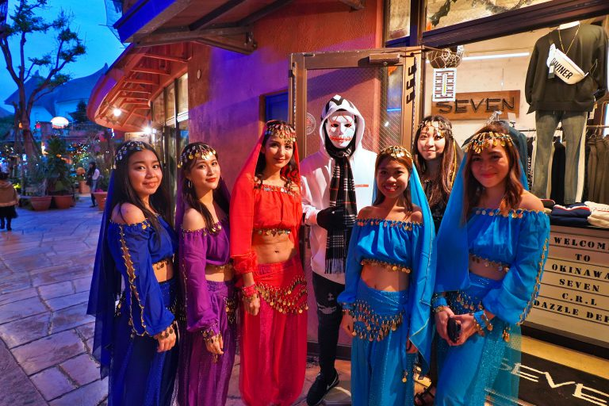
NexSeed沖縄校 富田校長
Programming Teacher
世界で活躍する、経験豊富な講師陣
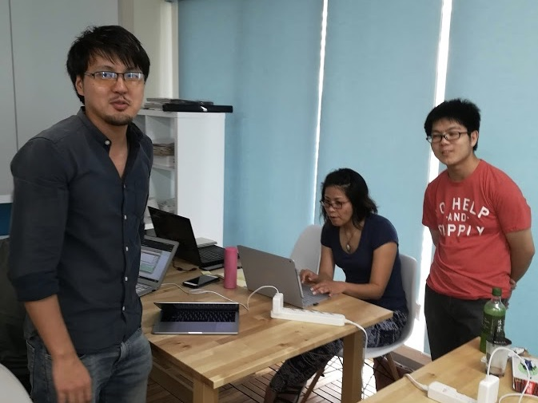
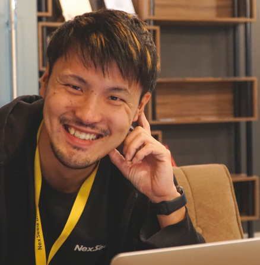
ATSUSHI IKEDA
大学卒業後、IT系企業でヘルプデスクや社内業務の効率化などを経験。
自由な時間を得られる働き方がしたいという思いから、フリーランスエンジニアを目指して日本のテックスクールで勉強。
3ヶ月勉強したのち、実務を通してスキルアップするため日本でwebエンジニアを経験、その後NexSeedに入社。目標はアイアンマンレース完走。
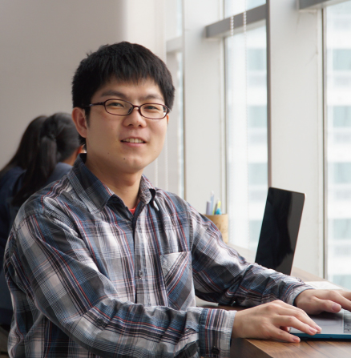
KAN YONEDA
香川県出身。小学生の頃家にゲームがなく、「ないなら作ろう」ということでプログラミングを触ったのがプログラミングのファーストタッチ。
高校卒業後、3ヶ月間プログラミングスクールに通い、IT企業に就職。約3年エンジニアとして働くが、英語を勉強するため退職し、NexSeedへ留学。
留学卒業後、プログラミングを教えたいという思いからNexSeedに入社し、現在はNexSeedで講師の他に社内システムの開発なども担当。
English Teacher
経験豊富な講師陣 Mady & Glad
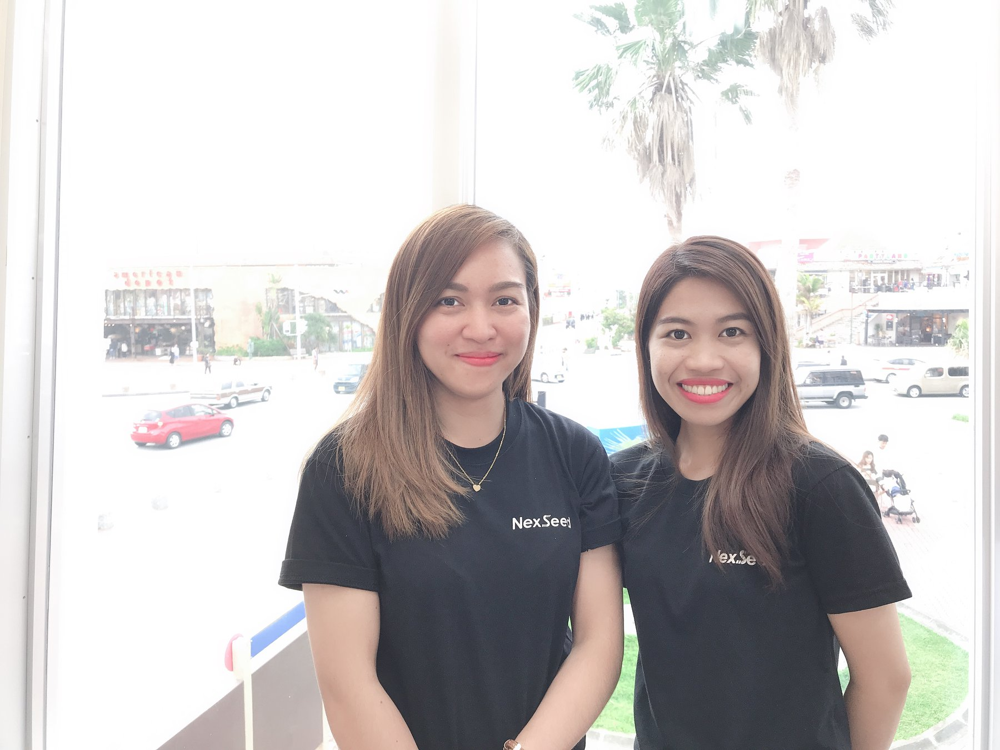
 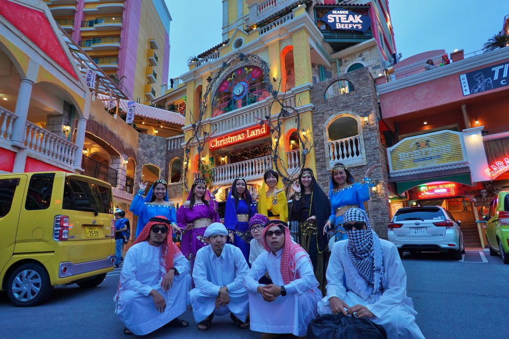
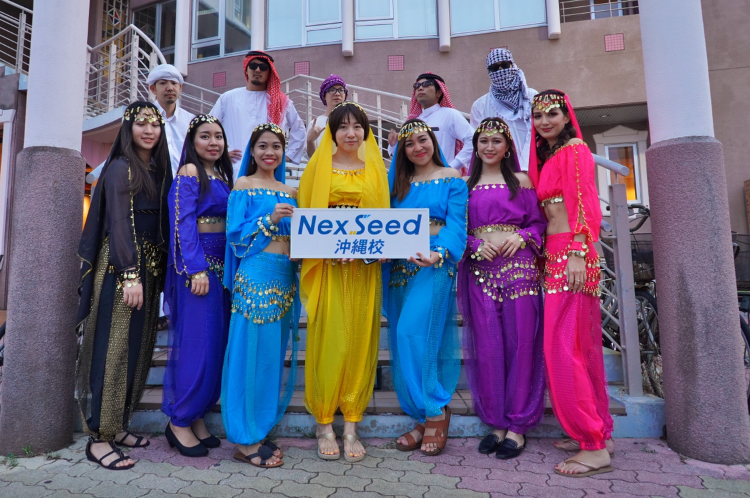
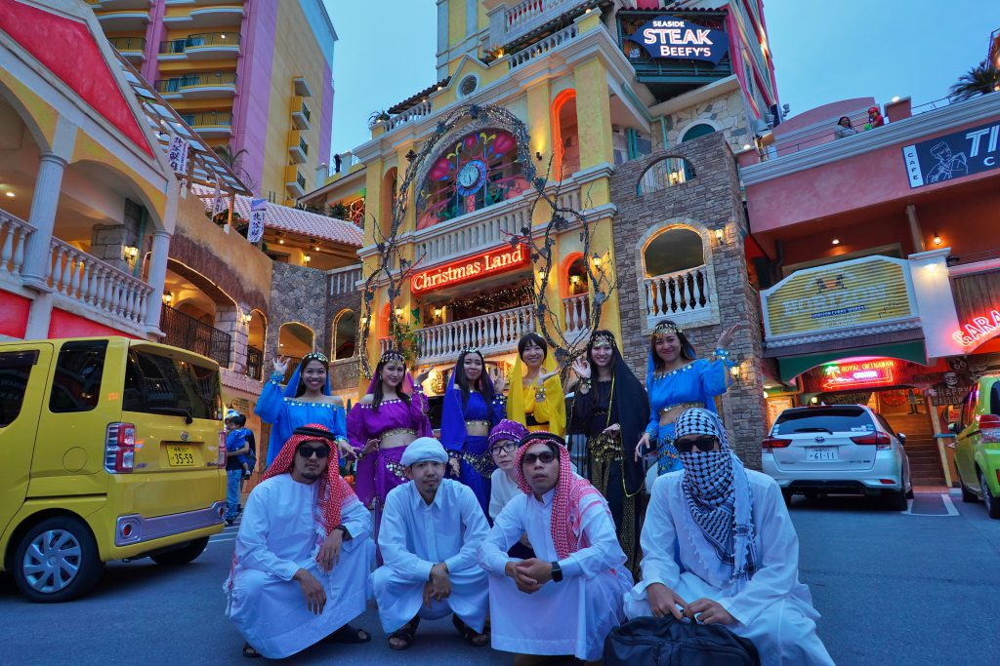
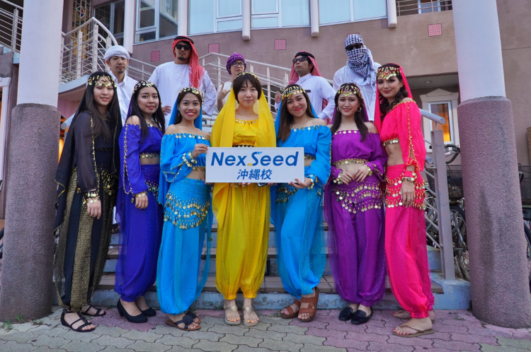
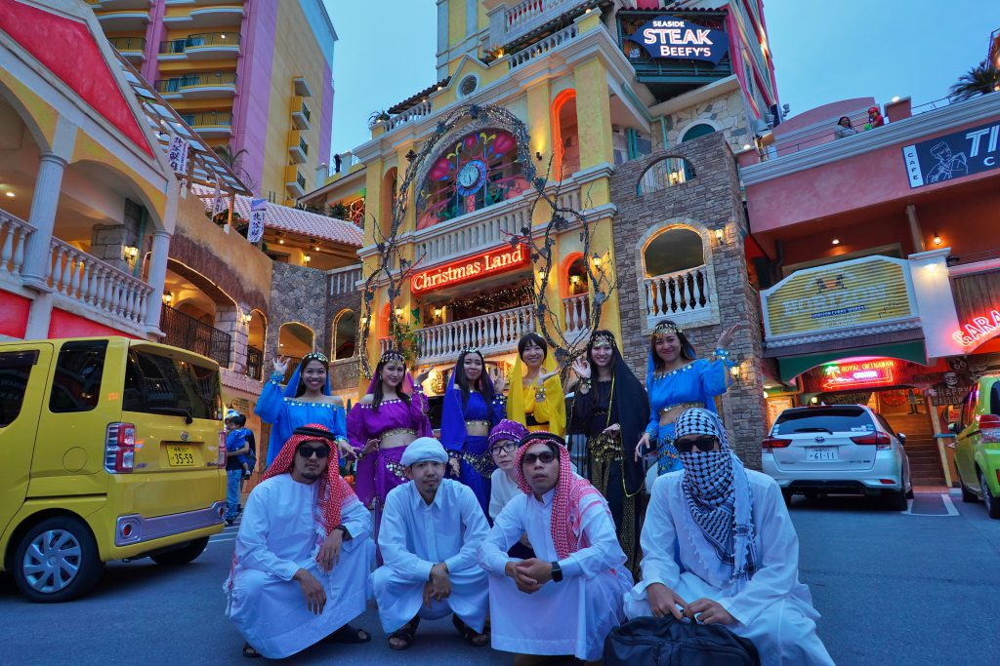
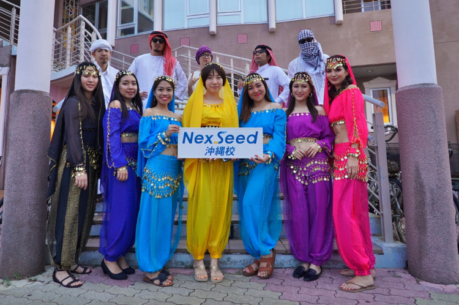